RTX Spark는 무엇이고 누구와 겨루나요
RTX(NVIDIA의 GPU 브랜드 이름) Spark는 NVIDIA(GPU 회사 이름)가 Computex에서 발표한 노트북용 SoC예요. CPU, GPU, 메모리를 칩 하나에 묶었고, 첫 제품 중 하나가 이 영상의 Microsoft Surface Laptop Ultra예요. NVIDIA와 Microsoft는 '프론티어 모델을 로컬에서 돌리려는 빌더', 그러니까 AI(Artificial Intelligence) 개발자를 첫 번째 대상으로 내세웠어요. 크리에이터와 게이머까지 아우른다고도 했죠. 리뷰어는 직접 써 본 뒤 "그래서 이건 누구를 위한 거지?"라는 질문을 계속 하게 됐다며 영상을 시작해요.
칩 안에 무엇이 들어 있나요
NVIDIA 슬라이드는 칩 사진 위에 'Custom Built With MediaTek'이라고 적어 둬요. CPU는 MediaTek과 함께 만든 20코어 Grace CPU예요. 성능 코어는 Arm Cortex-X925, 효율 코어는 Cortex-A725를 써요. 리뷰어는 이 두 코어 설계가 나온 지 2년이 넘었다는 점을 먼저 짚어요. 뒤에서 CPU 점수가 아쉬운 이유가 여기서 나와요.
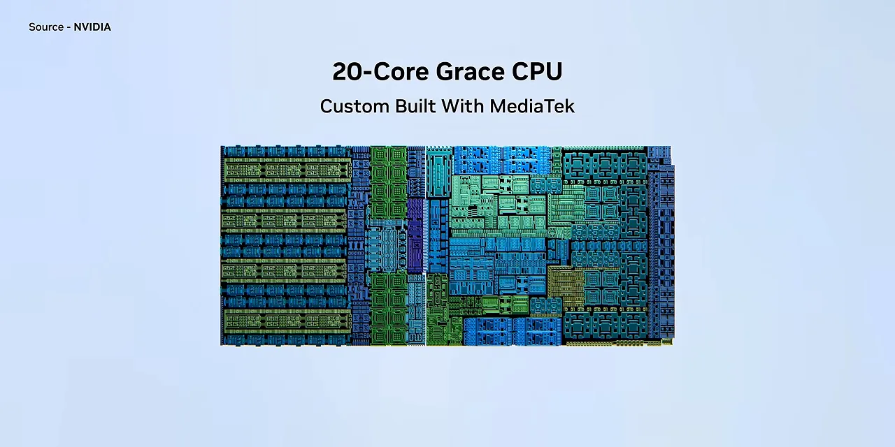
GPU는 Blackwell 세대 RTX GPU예요. 다음 슬라이드에는 CUDA(Compute Unified Device Architecture) 코어 6,144개와 'FP4 AI 성능 1 petaFLOP'이라는 숫자가 적혀 있어요. CPU와 GPU는 메모리 하나를 같이 써요. 리뷰어는 이 통합 메모리가 패키지 전체를 묶는 핵심이라고 설명해요.
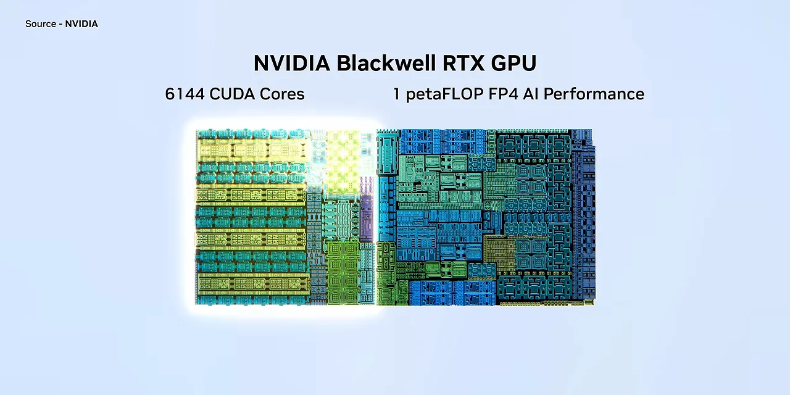
비교 상대는 다섯 대예요
리뷰어는 MacBook Pro M5, M5 Pro, M5 Max 세 대를 모두 가져왔어요. Windows 쪽 상대는 두 대예요. 하나는 HP ZBook Ultra로, AMD(Advanced Micro Devices) Ryzen AI Max+ Pro 395(코드명 Strix Halo)에 같은 128GB 통합 메모리를 달았어요. 다른 하나는 게이밍 노트북 Lenovo Legion Pro 5i예요. Intel Core Ultra 9 275HX(Arrow Lake)를 130W로 돌리고 RTX 5070 노트북 GPU를 달았어요.
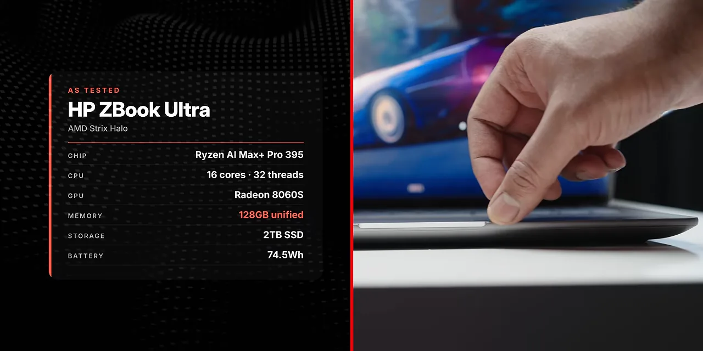
N1X 두 가지와 가격
NVIDIA는 Apple이 M5 Pro와 M5 Max를 나누듯 N1X도 두 등급으로 나눴어요. 왼쪽 카드가 기본형, 오른쪽이 상위형이에요. 기본형은 CPU 18코어에 CUDA 코어 5,120개, 메모리는 24GB나 32GB만 고를 수 있어요. 상위형은 CPU 20코어에 CUDA 코어 6,144개이고, 메모리를 24GB부터 128GB까지 고를 수 있어요. 아래 초록 띠가 리뷰어가 빌린 구성이에요.
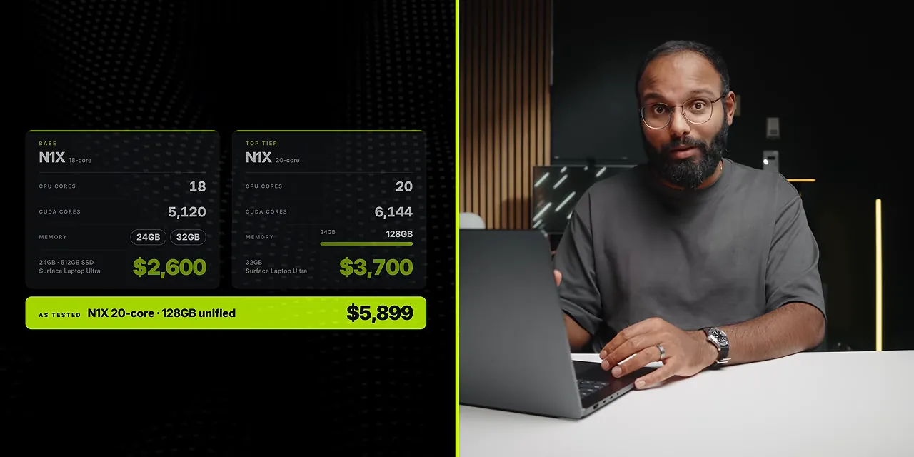
리뷰어가 이상하다고 짚은 점도 하나 있어요. 64GB 구성은 2TB SSD(Solid State Drive)를 고를 수 있는데, 128GB 구성은 1TB로 줄어들어요. 저장장치 수요 때문일 거라고 추측만 해요.
MacBook Pro와 값을 맞춰 보면
같은 3,699달러를 내면 Mac 쪽이 메모리가 두 배예요. 아래 막대가 그 비교예요. Surface Laptop Ultra 3,700달러 구성은 32GB, MacBook Pro 14 M5 Pro 3,699달러 구성은 64GB예요.
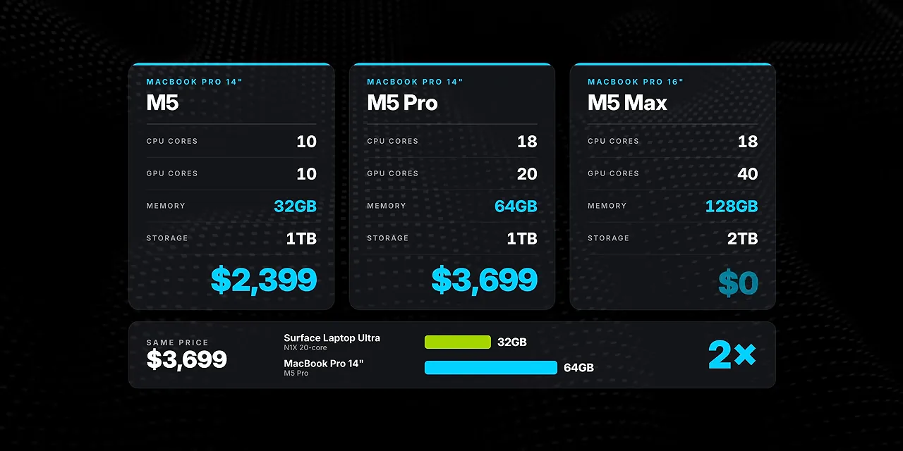
마지막으로 여섯 대를 가격순으로 세운 그래프예요. 맨 위 M5 Max 6,999달러 다음이 Surface Laptop Ultra 5,899달러예요. 바로 아래 HP ZBook Ultra는 원래 거의 1만 2천 달러였는데, 촬영 당시 할인해서 4,399달러였어요. 같은 128GB인데 Surface가 1,500달러 더 비싸요.
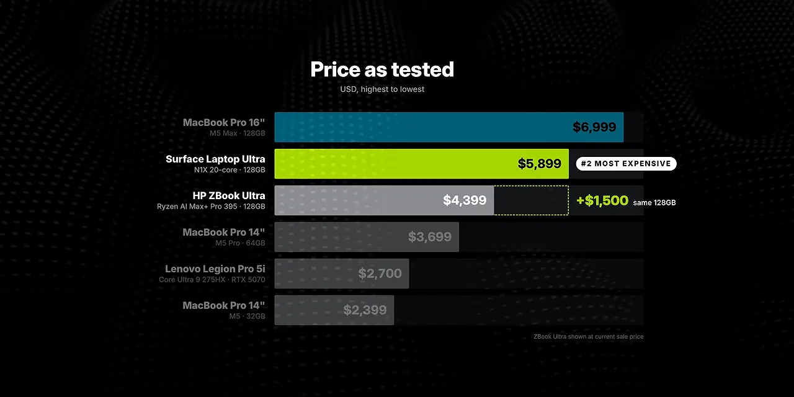
CPU, GPU, 크리에이터 앱 성능
숫자를 보기 전에 리뷰어가 단 단서가 하나 있어요. 그래프에서 N1X 옆의 80W는 SoC 전체 전력이에요. 촬영 당시 GPU-Z와 HWiNFO가 이 칩을 공식 지원하지 않아 CPU와 GPU를 나눠 잴 수 없었어요.
CPU: 코어가 오래된 티가 나요
싱글코어에서는 M5 계열에 크게 뒤지고, Arrow Lake와는 비슷하며, Strix Halo보다는 나아요. 짧게 반응하는 작업은 무리 없지만 Apple 설계가 훨씬 앞서 있다는 게 리뷰어의 평가예요.
멀티코어는 10분 동안 계속 돌린 뒤의 점수예요. 아래 Cinebench 2026에서 N1X는 7,004점으로 M5 Pro(8,405점)보다 약 17% 낮아요. 화살표가 가리키는 Legion Pro 5i(8,184점)에도 져요. Intel 칩은 코어가 더 많고 130W를 쓰니 그럴 만하다고 봐요. Strix Halo(6,146점)보다는 약 14% 높아요.
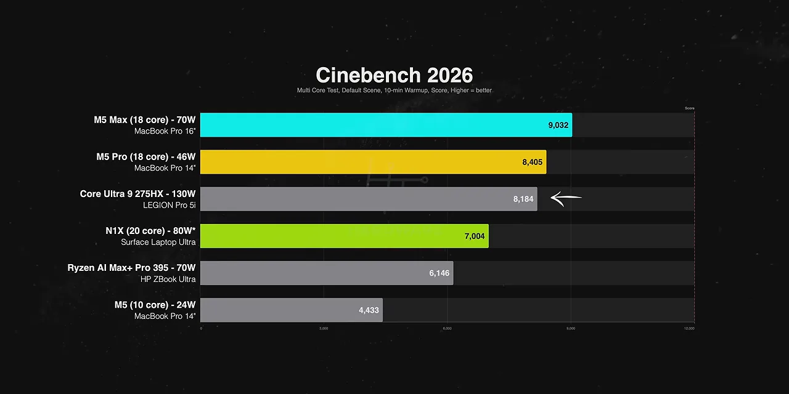
소음 이야기도 덧붙여요. 풀로드에서도 팬 소리가 거의 안 들릴 만큼 조용해서 MacBook Pro와 비슷해요. 대신 조용한 방에서는 코일 소음이 꽤 귀에 띄어요. GPU에 AI 작업을 걸 때 MacBook Pro에서 나는 소리와 비슷하다고 해요.
실제 렌더링 앱도 같은 흐름이에요. Blender CPU 렌더에서 N1X는 M5 Pro보다 약 3분의 1 더 걸리고, 이번에는 Strix Halo에도 져요. 그래프 아래쪽 초록 막대가 N1X예요. HandBrake 인코딩은 M5 Pro보다 약 15% 느리지만 Ryzen보다는 거의 1분 빨라요.
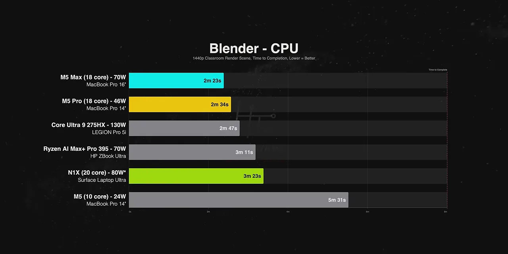
GPU: NVIDIA다운 결과
GPU를 쓰는 작업으로 넘어가면 이야기가 바뀌어요. Blender에서 OptiX 레이 트레이싱을 켜면 N1X(1분 42초)가 M5 Pro(2분 5초)보다 약 18% 빨리 끝내요. 화살표가 가리키는 RTX 5070(1분 34초)과도 8% 안쪽 차이예요. 5070은 112W로 도는데 N1X는 SoC 전체가 80W예요.
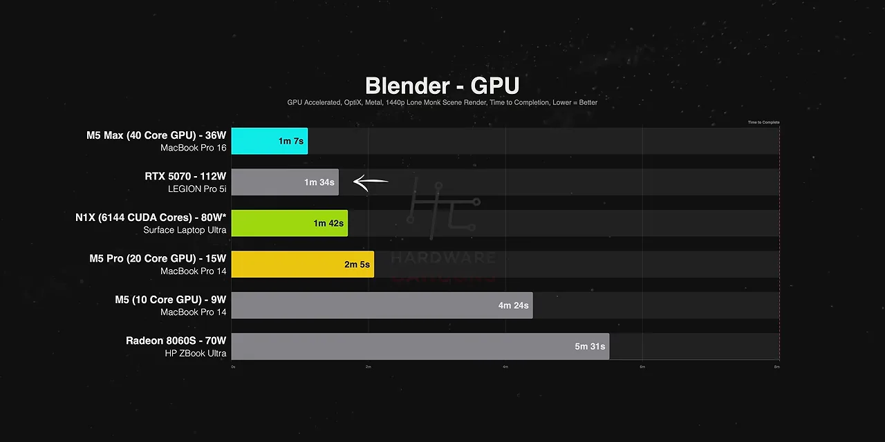
반면 HandBrake의 NVENC(NVIDIA Encoder) 하드웨어 인코딩은 아직 공식 지원이 없어 끝까지 돌지 못했어요. Qualcomm 칩용 Media Foundation 프리셋도 실패했어요.
크리에이터 앱: Windows on ARM의 벽
Photoshop은 이 플랫폼용 베타 빌드로 쟀어요. 그런데도 N1X(9,360점)가 맨 아래예요. M5 Pro보다 약 40% 낮고, 사실상 Arrow Lake와 같아요. N1X보다 3,500달러 싼 기본 M5조차 약 45% 빨라요.
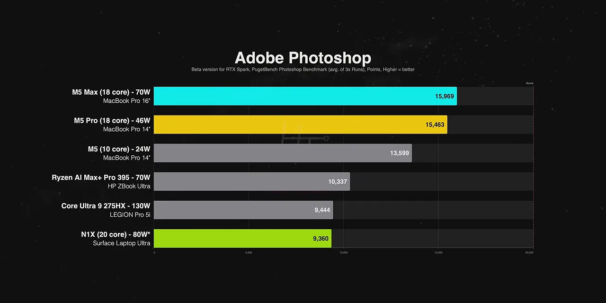
Lightroom Classic은 1억 2,400만 화소 RAW(가공하지 않은 원본 센서 데이터 형식) 사진을 100% 품질 JPEG(Joint Photographic Experts Group)로 내보냈어요. M5 Pro가 19초인데 N1X는 59초예요. 세 배가 넘고, 기본 M5(33초)의 거의 두 배예요. Lightroom이 Prism 에뮬레이션 위에서 돌기 때문이에요.
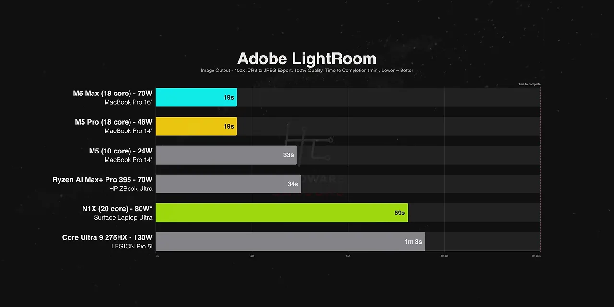
Premiere Pro 내보내기에서는 N1X(8분 40초)가 M5 Pro(7분 9초)보다 약 20% 오래 걸려요. M5 Max(4분 7초)는 절반도 안 걸려요.
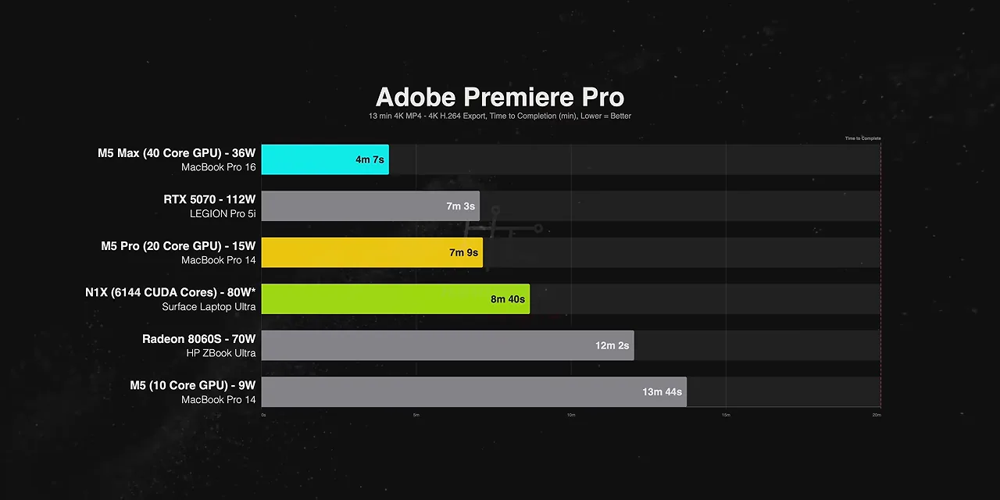
리뷰어는 이유를 Adobe의 지원 문서 화면으로 보여 줘요. '26.0에서는 아직 없고 이후 버전에 추가될 기능' 목록에 MKV(Matroska Video) 가져오기, ProRes RAW·ARRIRAW(ARRI 카메라의 RAW 영상 형식)·Canon Cinema RAW Light·Sony X-OCN 같은 RAW 영상 포맷이 있어요. 맨 아래 줄은 'Windows on ARM용 서드파티 플러그인은 되지만 Intel용으로 컴파일된 플러그인은 안 된다'는 내용이에요. 리뷰어는 여기에 하드웨어 가속 내보내기가 없는 점까지 들며, 네이티브판이 나온 지 1년 가까이 됐는데 이 상태인 건 용납하기 어렵다고 말해요. Adobe 작업이 중심이라면 약속에 돈을 낼 이유가 없고, 지금 바로 되는 x86이나 Apple Silicon을 사라는 거예요.
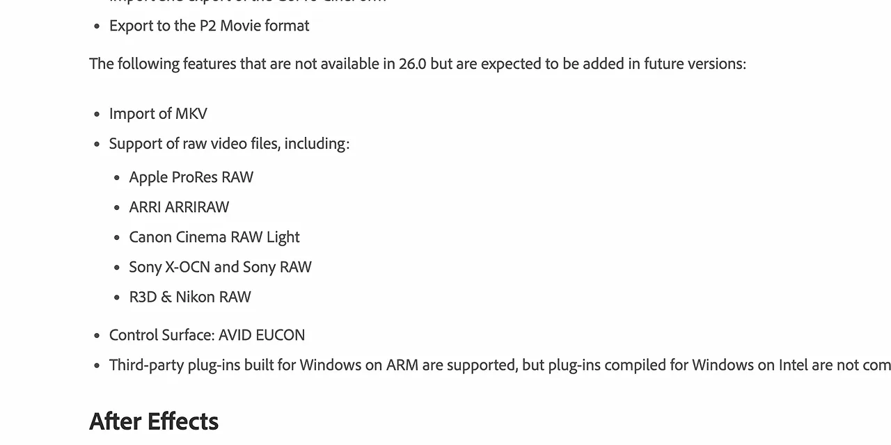
DaVinci Resolve Studio는 그나마 나아요. 4K 프로젝트 렌더에서 N1X(7분 10초)가 M5 Pro(6분 50초)와 5% 안쪽이에요. 그래도 M5 Max(3분 40초)는 절반 시간이면 끝내요. 리뷰어는 Resolve가 Apple Silicon의 큰 GPU와 미디어 엔진에 잘 맞춰져 있다는 증거로 봐요.
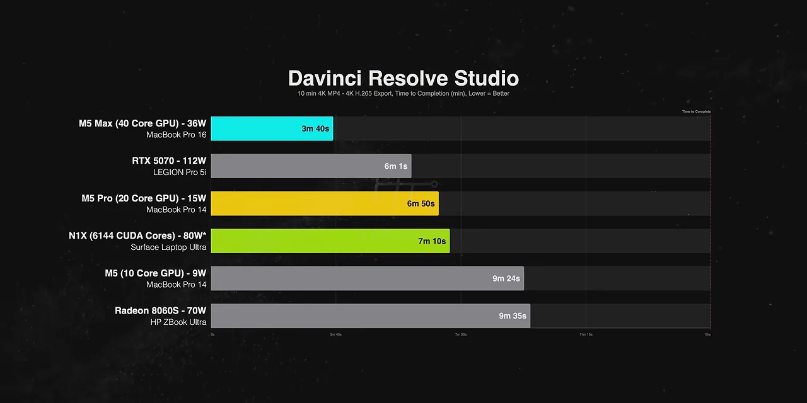
로컬 AI: 통합 메모리의 힘과 한계
NVIDIA와 Microsoft가 발표회에서 가장 강조한 게 AI예요. 리뷰어는 아직 이 노트북으로 AI를 제대로 쓰는 법을 익히는 중이라고 전제하고, LM(Language Model) Studio에서 120억(12B)부터 700억(70B) 파라미터까지 모델을 돌려 초당 토큰 생성 속도를 쟀어요.
측정 방식부터 짚고 가요
모델은 두 그룹으로 나뉘어요. 위 초록 칸의 Gemma 4 12B, gpt-oss 20B, Gemma 4 31B는 Mac에서 Apple의 MLX(Apple의 머신러닝 프레임워크 이름)로 돌렸어요. 아래 보라 칸의 Qwen 3.8 27B와 DeepSeek R1 70B는 Mac과 PC(Personal Computer) 모두 같은 GGUF(GPT-Generated Unified Format) 파일로 돌렸어요. 그래서 초록 칸 결과는 Mac이 자기 전용 엔진 덕을 조금 봐요.

작은 모델에서는 Mac이 앞서요
Gemma 4 12B 그래프에서 N1X는 32.03 tok/s로 M5 Pro(38.07)보다 약 16% 느려요. 이 정도 모델은 128GB 메모리가 전혀 필요 없으니 Mac이 MLX 이점을 그대로 누려요. M5 Max(65.84)는 N1X의 약 두 배예요. 그래도 Windows 노트북 중에서는 N1X가 가장 빨라요. RTX 5070보다는 50% 넘게 앞서요. 리뷰어는 Ryzen AI Max+보다 약 70% 빠르다고 말하지만, 그래프 숫자(32.03 대 27.16)로는 약 18% 차이예요.
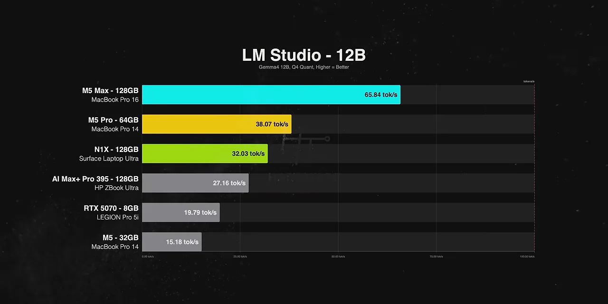
gpt-oss 20B(Mac은 MLX)에서는 차이가 9%로 좁혀져요. N1X는 Strix Halo보다 꾸준히 앞서고, RTX 5070의 거의 두 배를 내요.
27B Q4: N1X가 처음 이기는 곳
여기서부터는 양쪽 모두 GGUF예요. 리뷰어는 양자화를 '모델 압축 단계'에 빗대 설명해요. Q8처럼 숫자가 크면 원래 품질에 가깝지만 메모리 대역폭을 더 써요. Q4처럼 작으면 모델이 줄어 빨라지는 대신 정확도를 조금 내줘요.
Qwen 3.8 27B를 Q4로 돌리자 N1X(30.39)가 M5 Pro(27.73)를 약 10% 앞서고, M5 Max(34.52)와 12% 안쪽까지 붙어요. 맨 아래 RTX 5070은 5.56 tok/s로 떨어져요. 모델이 5070의 8GB VRAM(Video Random Access Memory)에 다 들어가지 않아 시스템 메모리로 넘치기 때문이에요. N1X가 5070보다 다섯 배 넘게 빨라요.
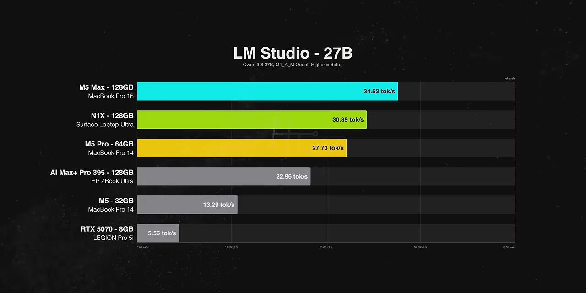
리뷰어는 이게 RTX Spark의 진짜 비장의 무기라고 봐요. 별도 GPU를 단 노트북은 GPU 전용 메모리(VRAM)가 작아서, 20~50GB짜리 모델을 돌리면 일부가 느린 시스템 메모리로 넘쳐요. N1X는 CPU와 GPU가 큰 메모리 하나를 같이 쓰고, 앱에 따라 GPU 몫을 자동이나 수동으로 정할 수 있어요. 아래 그림이 그 차이예요.
더 무거운 모델에서는 다시 Mac
같은 Qwen 3.8 27B를 Q8로 올리면 N1X(19.63)는 M5 Pro(21.23)보다 약 8% 뒤지고, M5 Max(28.44)보다는 약 30% 느려요. 리뷰어는 무겁고 품질이 높은 모델일수록 메모리 대역폭이 중요해지고, M5 Max의 대역폭이 N1X의 두 배라서라고 해석해요. M5 Pro와는 대역폭이 비슷해서 차이가 작아요. 기본 M5는 이 모델부터 메모리가 모자라 못 돌려요.
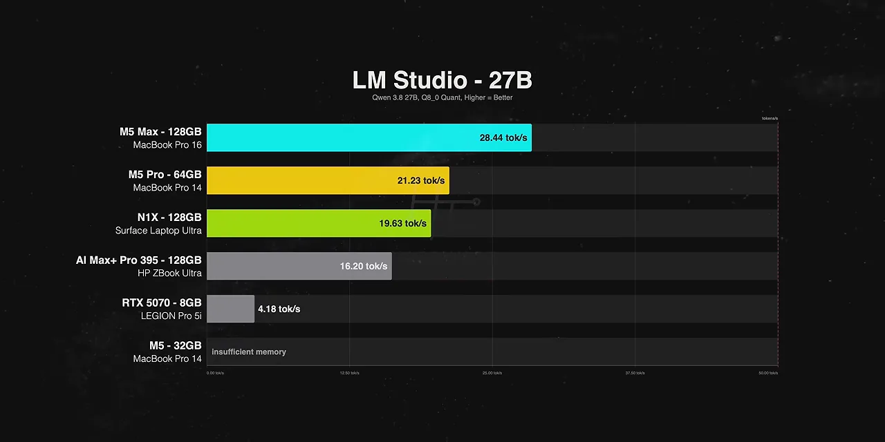
Gemma 4 31B(Mac은 MLX)에서도 N1X(13.76)는 M5 Pro(15.57)보다 약 12% 느리고 M5 Max(26.63)의 절반 수준이에요. Strix Halo보다는 앞서고, RTX 5070보다는 네 배 넘게 빨라요.
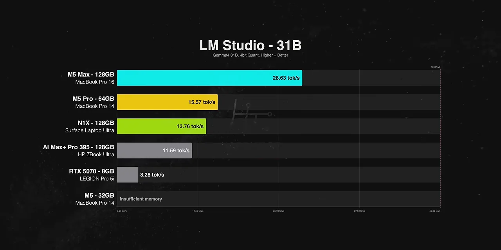
마지막은 DeepSeek R1 Distill Llama 70B를 Q4로 돌린 결과예요. 128GB 메모리가 빛날 무대였는데, N1X(5.90)는 64GB인 M5 Pro(6.43)보다도 약 8% 느려요. Q4로 줄인 70B 모델은 64GB에도 넉넉히 들어가기 때문이에요. 기본 M5와 RTX 5070은 메모리가 모자라 아예 못 돌렸어요. 같은 128GB인 ZBook(3.68)보다는 약 60% 빨라요.
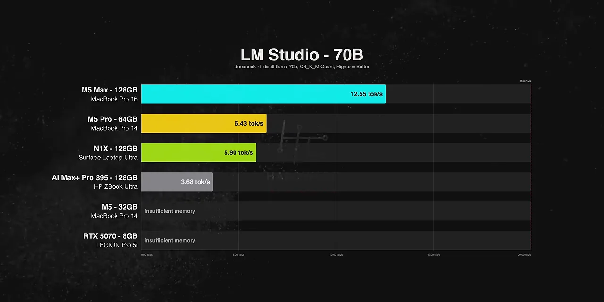
AI 결과를 한 줄로
N1X는 같은 128GB인 ZBook Ultra를 모든 모델에서 이겼고, 큰 모델에서는 RTX 5070을 압도했어요. 여기에 AI 개발자가 가장 많이 쓰는 CUDA 도구 모음까지 쓸 수 있어요. 얇은 Windows 노트북에서 큰 통합 메모리와 CUDA를 함께 주는 기기는 이 비교군에 없어요. 리뷰어는 로컬 AI용 Windows 노트북으로는 손꼽히는 선택이라고 보면서도, MacBook Pro를 따라잡기엔 모자라다고 정리해요.
게임: Mac보다 낫지만 게이밍 노트북은 아니에요
Windows on ARM에서 게임은 늘 '돌아가느냐'부터 따지는 문제였어요. 대부분의 Windows 게임은 x86용으로 만들어져서, N1X에서는 Microsoft의 Prism 에뮬레이터를 거쳐 돌아요. 리뷰어가 강조하는 건 CPU 쪽만 에뮬레이션되고 GPU는 그대로 돈다는 점이에요. 그래서 CPU를 많이 쓰는 게임일수록 손해가 커져요.
리뷰어는 Microsoft와 NVIDIA가 공을 들였다는 점도 인정해요. Prism을 RTX Spark에 맞게 손봤고, 프레임 간격이 고르게 나오도록 개선했어요. 셰이더를 미리 내려받아 끊김을 줄이는 기능도 들어갔고, 일부 게임은 안티치트 문제를 해결하는 중이에요. Arm 네이티브 게임도 늘어날 예정이에요.
네이티브 게임: Mac보다 부드러워요
해상도는 1600p예요. Mac 쪽에서는 Cyberpunk, Baldur's Gate 3, Warhammer 3만 네이티브로 돌고, 나머지는 CrossOver 번역 계층을 거쳤어요.
Cyberpunk에서 N1X는 M5 Pro보다 평균 약 65% 빠르고, 1% low는 3.5배 넘게 높아요. Baldur's Gate 3 그래프에서는 막대 하나에 숫자가 두 개 있어요. 진한 안쪽이 1% low, 바깥 끝이 평균이에요. N1X는 평균 48.38, 1% low 39.17이고, M5 Pro는 30.19와 17.64예요. M5 Max는 평균(71.65)이 높지만 1% low가 37.20까지 떨어져요. 리뷰어가 여러 번 다시 돌려도 해결하지 못했다고 해요.
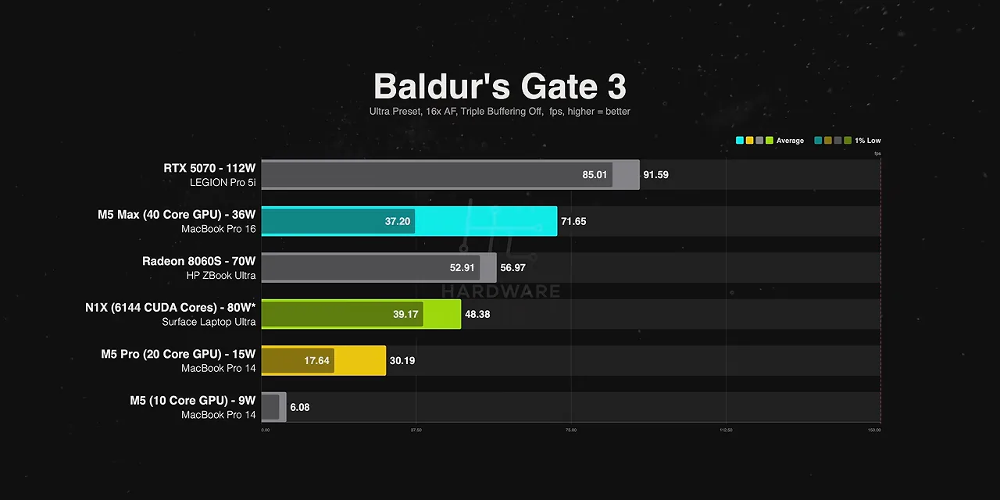
Warhammer 3도 같은 모양이에요. N1X(평균 48.30)가 M5 Pro(33.44)보다 약 44% 앞서요. M5 Max의 평균(69.52)이 다시 약 44% 높지만, 1% low는 N1X(40.15)가 M5 Max(23.62)보다 훨씬 나아요. 그래서 Mac이 네이티브로 돌고 N1X가 에뮬레이션인데도 전체 체감은 N1X가 더 부드러웠다는 게 리뷰어의 평가예요.
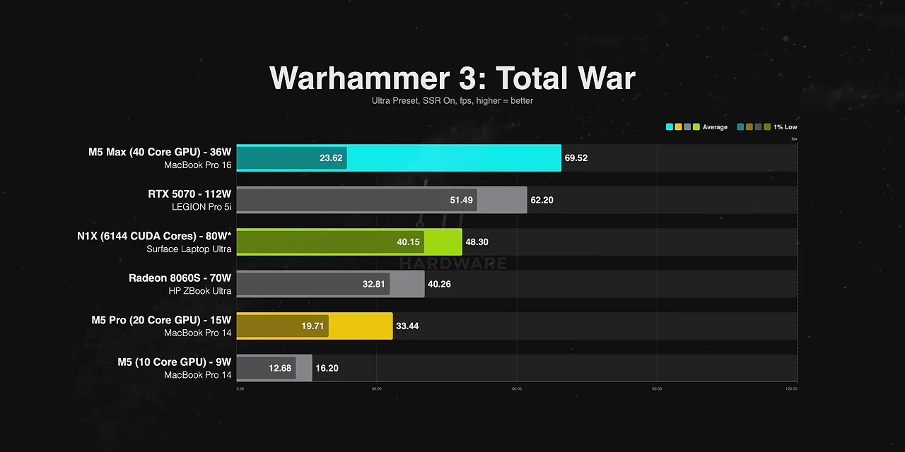
번역해서 도는 게임: 호환성과 CPU가 문제예요
Mac이 CrossOver로 더 무거운 번역을 해야 하는 게임들이에요. Black Myth: Wukong에서 N1X는 M5 Pro보다 약 25% 빠르고 RTX 5070과 5% 안쪽이에요. Indiana Jones는 Mac에서 아예 돌지 않아요. N1X는 5070보다 약 23% 느리지만 AMD Radeon 8060S보다 약 50% 빨라요.
Counter-Strike 2는 CPU를 가장 많이 쓰는 축에 드는 게임이에요. N1X(평균 107.73)는 M5 Pro(75.28)보다 여전히 약 43% 빠르지만, 맨 위 RTX 5070(292.49)이 거의 세 배예요. Radeon 8060S(131.25)도 약 22% 앞서요. 에뮬레이션 손해에 Arm 코어의 낮은 싱글코어 성능이 겹친 결과예요.
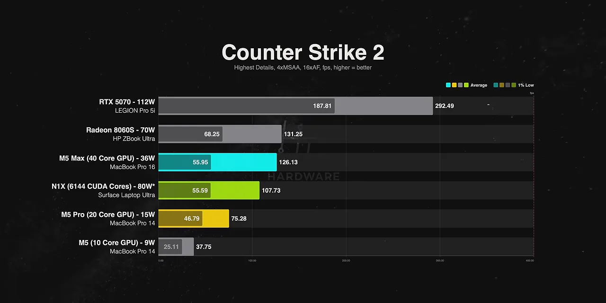
Marvel Rivals는 평균은 괜찮았지만 1% low가 낮아 계속 끊겼어요. 아예 돌지 않은 게임도 있어요. Battlefield 6는 지원되지 않고, Rainbow Six Siege는 안티치트가 막았고, Doom Eternal은 실행되지 않았어요. 아래 화면이 Rainbow Six Siege를 켰을 때 뜬 Ubisoft 안티치트 오류예요.
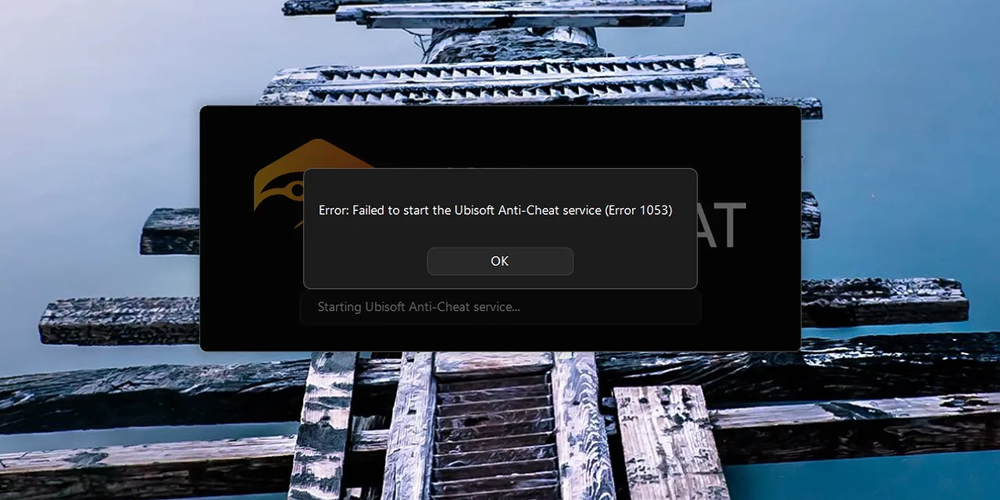
정리하면 RTX Spark는 어느 Mac보다 더 많은 게임을 돌리지만, Legion Pro 5i 같은 별도 GPU 게이밍 노트북에는 한참 못 미쳐요.
배터리: 가장 아쉬운 부분
리뷰어가 가장 기대했다가 가장 실망한 부분이에요. Surface Laptop Ultra의 배터리는 89Wh로 14인치 MacBook Pro(72.4Wh)보다 큰데도 결과가 나빠요.
웹 서핑과 유튜브 재생
웹 서핑 테스트에서 N1X는 14시간 8분 버텼어요. M5 Pro(17시간 45분)보다 약 20%, 16인치 M5 Max(23시간 18분)보다 약 40% 짧아요. ZBook Ultra와 Legion Pro 5i보다는 꽤 길지만, 배터리 크기를 맞춰 보면 Strix Halo보다 효율이 거의 낫지 않아요. 리뷰어는 Arm 칩으로서는 민망한 결과라고 말해요.
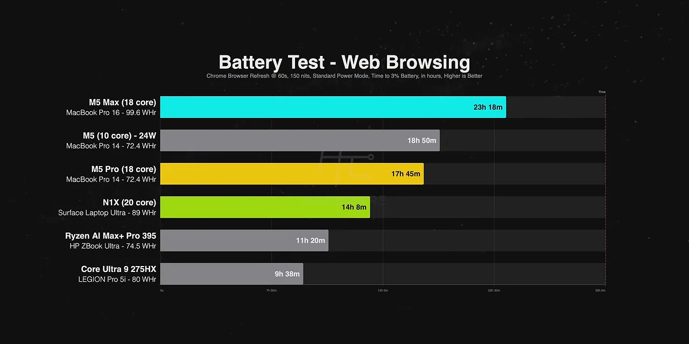
4K 유튜브 재생에서는 무너져요. N1X는 8시간으로 웹 서핑보다 40% 넘게 줄어요. 반대로 Mac 세 대는 웹 서핑보다 유튜브에서 더 오래 갔어요. 기본 M5는 26시간 4분이에요. 리뷰어는 Apple Silicon에 들어간 미디어 엔진 덕분이라고 봐요. N1X는 M5 Pro(19시간 57분)보다 약 60% 짧고, 기본 M5의 3분의 1도 안 돼요.
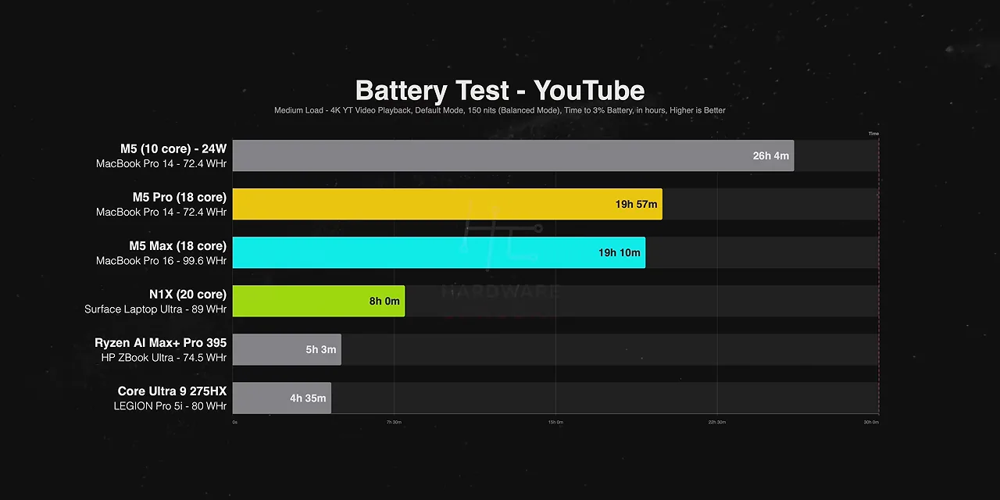
게임하면서 버티는 시간은 N1X가 그나마 체면을 지킨 결과예요. Cyberpunk를 돌리면 1시간 26분으로 M5 Pro(1시간 27분)와 거의 같고, M5 Max보다 약 19%, ZBook보다 약 25% 길어요. 다만 리뷰어는 M5 Pro가 배터리가 작은 14인치라는 점을 다시 짚어요. 16인치 M5 Pro였다면 결과가 달랐을 거예요.
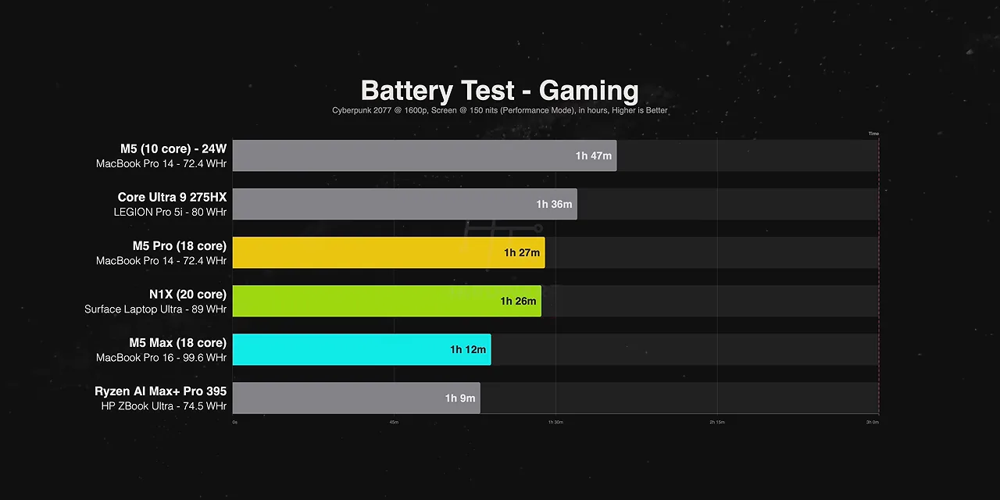
전원을 뽑으면 성능이 얼마나 남나요
NVIDIA 자료의 'High Performance on the Go' 그래프는 이미지 생성, 영상 편집, 3D 렌더, 게임 네 항목에서 배터리일 때와 전원을 꽂았을 때 막대 길이가 거의 같다고 보여 줘요. 리뷰어 말로는 NVIDIA 가이드에 '전원을 뽑아도 성능의 약 95%를 유지한다'고 적혀 있어요.
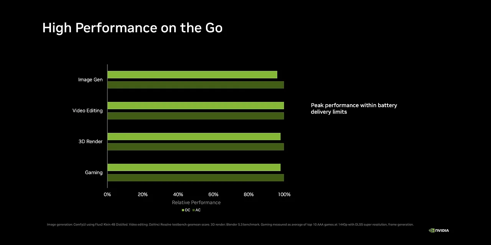
실제로 재 보니 Mac 세 대는 모든 테스트에서 사실상 떨어지지 않았어요. N1X는 Cinebench 2024에서 1,250점으로 26% 떨어졌어요. Strix Halo와 같은 폭이고, Arrow Lake(-35%)보다는 덜해요. 막대 오른쪽의 빨간 숫자가 떨어진 비율이에요.
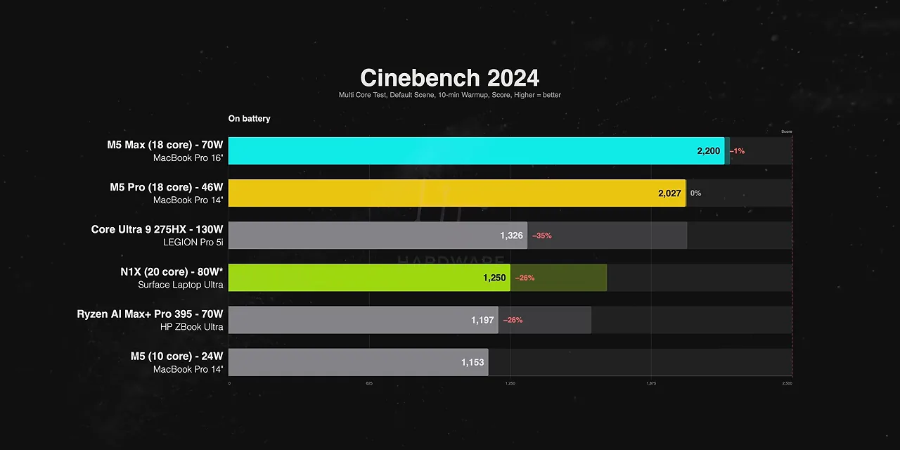
HandBrake 인코딩은 배터리에서 27% 더 걸렸어요. RTX Spark용 베타로 돌린 Photoshop은 5,783점으로 약 40% 떨어졌어요(화면 표시는 -38%). 이동하면서 작업하려는 크리에이터에게는 반갑지 않은 결과예요. 리뷰어 측정으로는 N1X가 배터리에서 성능의 80%도 지키지 못해요.
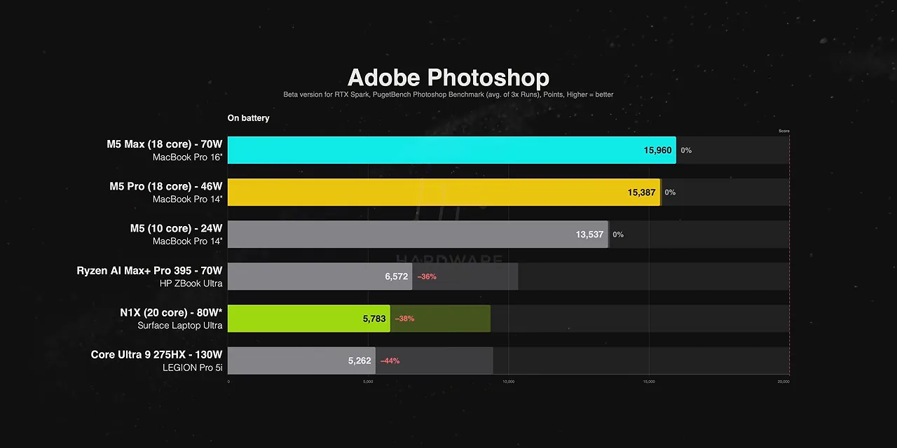
하드웨어는 훌륭해요, 그리고 결론
칩을 빼고 기기만 보면 평가가 확 달라져요. 리뷰어는 Surface Laptop Ultra를 지금까지 써 본 Windows 노트북 중 가장 고급스러운 축에 넣어요. CNC(Computer Numerical Control)로 깎은 15인치 아노다이징 알루미늄 유니바디이고, 두께 18mm, 무게 약 2kg이에요.
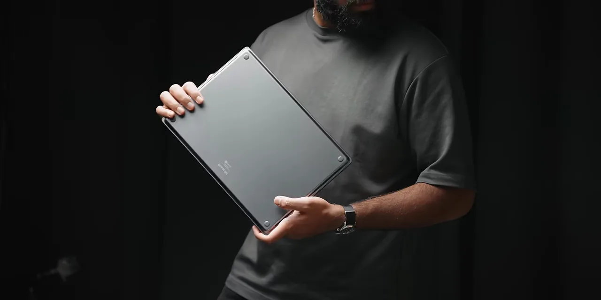
화면, 트랙패드, 스피커
화면은 15인치 3.2K 터치스크린이고 최대 120Hz 가변 주사율이에요. 두 기기 모두 sRGB를 100%, DCI-P3를 거의 100% 덮어요. 색 정확도는 Surface가 조금 낫지만 눈으로는 구분하지 못했다고 해요. 차이는 밝기예요. SDR(Standard Dynamic Range)에서 1,000니트를 넘겨 MacBook Pro보다 55% 밝고, 이 채널이 잰 화면 중 가장 밝아요. 무광 옵션이 없는 건 아쉽지만 밝기로 반사를 충분히 이긴다고 봐요.
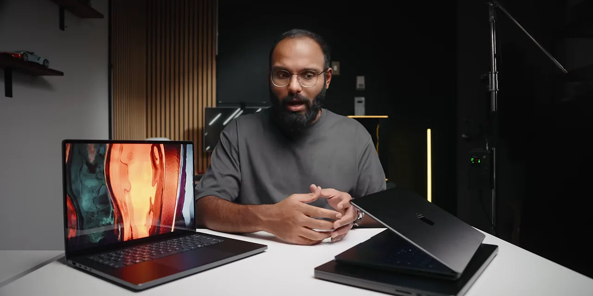
트랙패드는 햅틱 방식이라 어디를 눌러도 정확하게 반응해요. 클릭만이 아니에요. Premiere, Resolve, Photoshop, Microsoft Office가 햅틱을 지원해서, 타임라인을 넘기거나 요소를 제자리에 맞출 때 작은 진동이 느껴져요. Windows 창 관리에도 적용돼요. 키보드는 백라이트가 있고 키 주변으로 빛이 덜 새요.
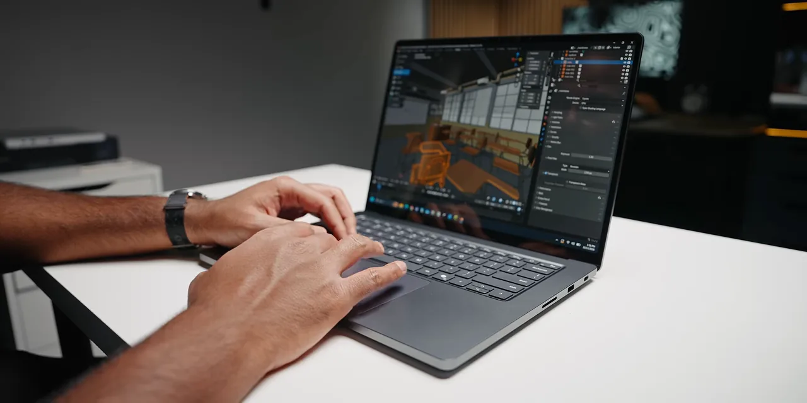
스피커는 진동을 줄이도록 띄워서 단 두 개의 스피커 박스가 옆쪽 통풍구로 소리를 내요. 아주 크고 저음도 좋아요. 다만 앞을 향한 드라이버가 없어서 고음이 약하고, MacBook Pro에 비하면 보컬이 답답하게 들렸다고 해요.
충전과 포트
Microsoft가 '세계 최초의 자석식 USB-C 충전'이라고 부르는 Magnetic Connect가 들어 있어요. 케이블이 자석으로 붙고, LED(Light Emitting Diode)로 충전 중임을 알려 줘요. USB-C라서 데이터와 화면 출력도 같은 포트로 돼요. 다만 자석 커넥터는 한쪽 포트에만 맞고, 왼쪽의 다른 USB-C 포트에는 안 붙어요. 140W 어댑터는 MacBook Pro 것처럼 작은데, 케이블이 리뷰어가 본 것 중 가장 짧아요. 연장 케이블은 따로 팔아요.
포트는 아래 화면에 적힌 대로예요. USB4(Universal Serial Bus 4) Type-C 3개, HDMI(High-Definition Multimedia Interface) 2.1b, USB(Universal Serial Bus) 3.2 Gen2 Type-A(10Gbps), UHS-II 카드 리더, 헤드폰 잭이에요. 바닥 고무발 아래 나사 네 개를 풀면 SSD를 직접 바꿀 수 있어요. 안에 든 Gen 5 SSD는 M5 Max와 M5 Pro MacBook Pro보다도 빨라요.
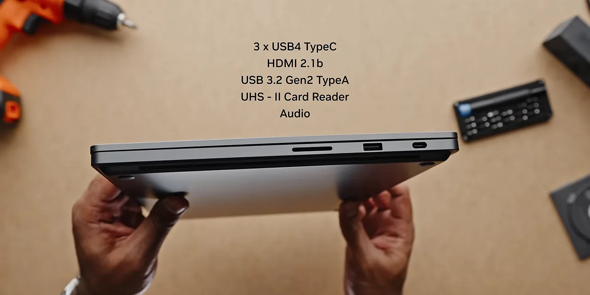
그래서 누구를 위한 노트북인가요
영상에서 리뷰어가 M5 Pro와 비교해 말한 차이를 한 그림에 모았어요. 초록 막대는 N1X가 나은 항목, 빨간 막대는 M5 Pro가 나은 항목이에요. 게임 말고는 대부분 빨간색이에요.
리뷰어의 결론은 이래요. NVIDIA와 Microsoft가 NVIDIA의 AI 강점을 통합 메모리 구조에 얹은 건 박수 칠 만한 새 시도예요. 하지만 Windows on ARM의 단서와 깨진 약속을 그대로 안고 있어요. 큰 메모리와 Windows에서의 CUDA가 꼭 필요한 AI 개발자가 아니라면 고를 이유가 없다고 봐요.
| 이런 걸 원한다면 | 리뷰어의 판단 |
|---|---|
| Windows on ARM에 기대했던 배터리 효율 | 아니에요 |
| 최고의 크리에이터 작업용 기기 | 절대 아니에요 |
| 모든 게임이 돌아가는 기기 | 아니에요 |
| 큰 통합 메모리 + Windows의 CUDA (AI 개발) | 흥미로운 선택이에요. 128GB 구성이라면요 |
구성에 대한 조언도 있어요. 128GB 모델은 AI 개발자에게 흥미롭지만, 32GB 구성으로 RTX Spark를 고를 이유는 모르겠다고 해요. AI를 내세운 노트북이라면 40GB 아래는 값어치가 없다는 게 리뷰어의 개인 의견이에요.
If this was launched before the AI boom, it would be dead on arrival.
AI 붐 이전에 나왔다면 나오자마자 묻혔을 거예요.
— 영상 26:42
리뷰어는 RTX Spark를 지금의 AI 열풍 덕분에 좋게 보이는 '한 가지 재주' 구조라고 불러요. 그 밖의 사람에게 'Apple이나 x86 대신 왜 RTX Spark를 사야 하나'라는 질문의 답은 '사지 마세요'예요. 그래도 2~3년 뒤를 기대한다고 덧붙여요. NVIDIA가 이 구조를 계속 다듬고 Microsoft와 함께 Windows on ARM 경험을 끌어올린다면 다시 볼 만하다는 거예요. Microsoft를 움직일 수 있는 회사가 있다면 NVIDIA라고 보면서요. 지금은 아쉬운 점이 많은 1세대 제품이라는 게 마지막 평가예요.